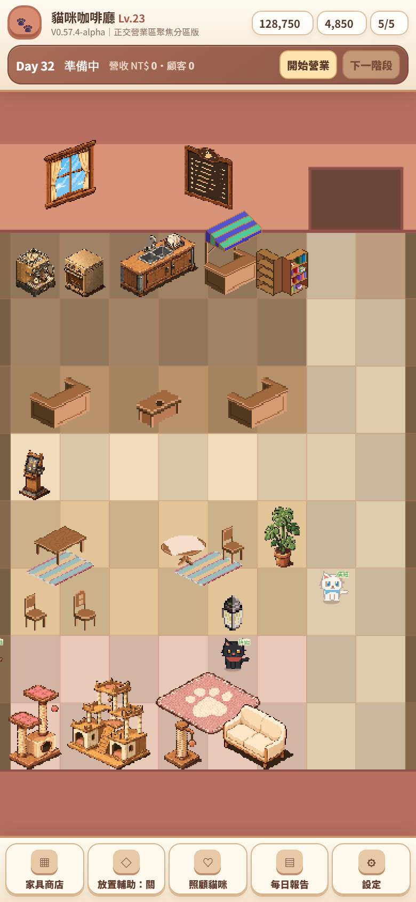
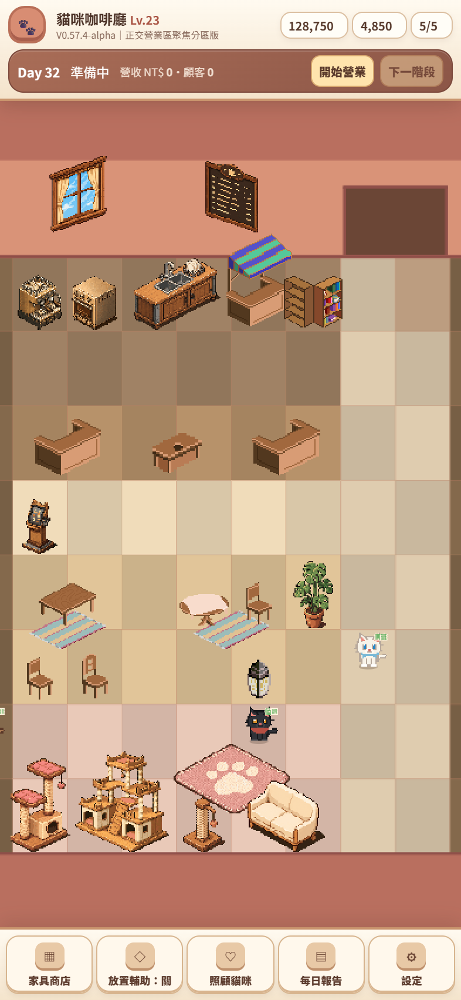
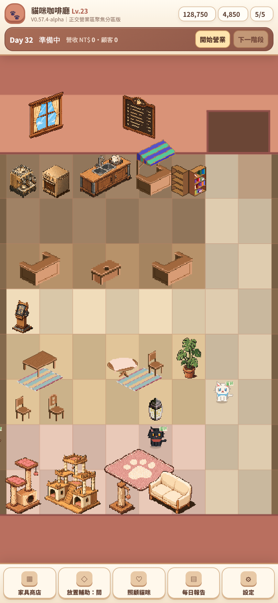
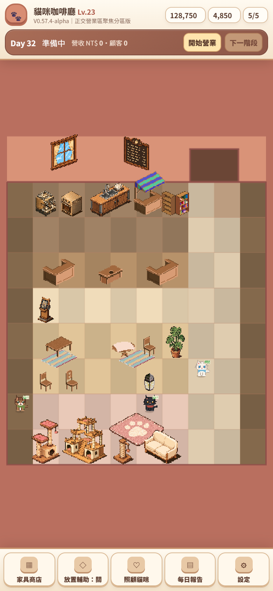
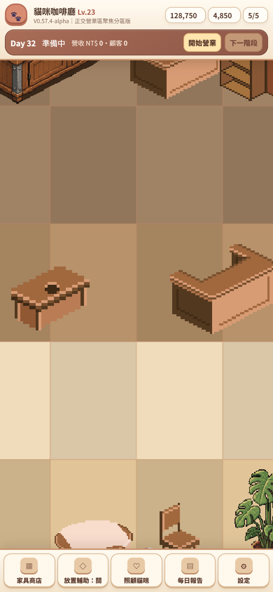
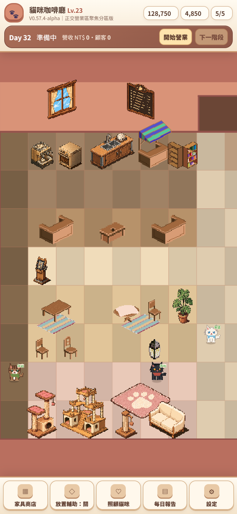
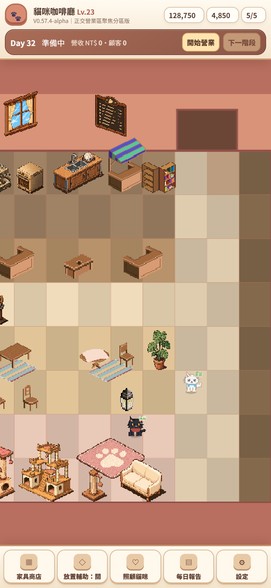
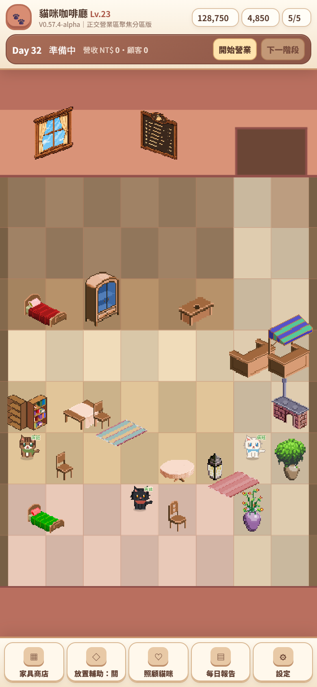
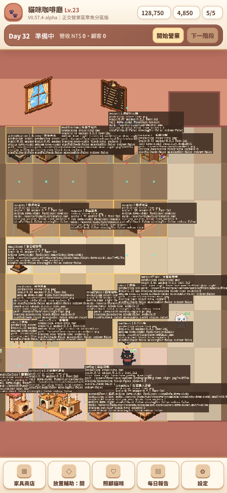
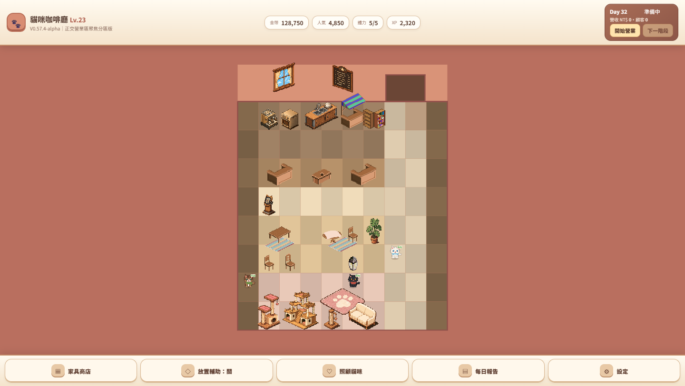

1. 手機直立首屏 before(V0573) / after(V0574)（390×844）


| 視窗 | 首屏 zoom | minZoom(整房) | 核心縱向占 safe | 左右每側裁切 | 地板占用 |
|---|---|---|---|---|---|
| 390×844 | 0.526 | 0.420 | 94% | ~8% | ~48% |
| 393×852 | 0.530 | 0.424 | 93% | ~8% | ~48% |
| 430×932 | 0.582 | 0.466 | 91% | ~8% | ~48% |
牆面 200→155、coreTopStrip 140→118、doorHeight 130→112。fill 較 V0573（96/95/93%）略降（牆更薄），換得更少空牆＋更高密度＋分區可辨。門在 x7-8、core 必含 x8，取景寬度受幾何鎖定，故不靠放大縮放。
2. 分區地板底色（一眼可辨）
- 上方連續服務區：設備帶(y0)＋櫃檯(y2) 各無縫覆蓋 x1-6。
- 員工工作側 vs 顧客側：櫃檯(y2)為分界；工作側(y0-1)較深暖棕、顧客前廳(y3)亮奶油。
- 座位成組：兩組桌椅各在地毯上（x1-2、x4-5），中留走道。
- 貓咪集中：前左角貓跳台/城堡/抓柱/貓地毯（玫瑰底色）。
- 主走道：x7-8 中性米色，讀作循環動線。
3. 三種手機寬度首屏



4. Camera：整房 zoom-out（分區底色一覽）與放大


5. Pan 四邊界



6. 真實存檔 / Art Debug / 桌面



家具仍為等角 Placeholder（正交透視待 ART-0574）。三層服務與分區僅空間/視覺，無收銀/製作/送餐行為。詳見 V0574 結果。